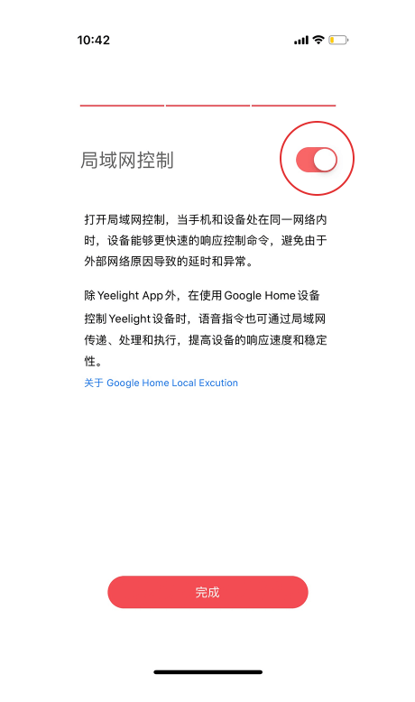

用了三年 Yeelight 才发现：这五个隐藏玩法官方根本没宣传
你以为 Yeelight 只是个能调色的 Wi-Fi 灯泡？IFTTT 条件触发、局域网控制、预设模式二次加工……这些藏在菜单深处的功能，把智能灯的天花板往上抬了一大截。
引子：大多数人只用了它 30% 的能力
我装 Yeelight 是在三年前——一个租房党从Yeelight官网了解到这款 Wi-Fi 灯泡后，想给出租屋添点氛围感，挑了颗彩光灯泡，配网成功那天觉得自己"搞定了智能家居"。之后的使用场景也很朴素：晚上喊小爱同学开个暖光、睡前定时关灯、偶尔在彩光盘里拖两下搞个赛博蓝。
你是不是也这样？
翻完Yeelight文档才意识到，Yeelight 的功能密度远不止"调色 + 定时"。有些藏在二级菜单里，有些需要和别的平台搭起来用，还有几个——说出来你可能不信——跟路由器设置直接相关。这篇就挖五个我私藏了很久、官方也没怎么宣传的冷门玩法。
隐藏玩法一：IFTTT 条件触发，让灯"主动"做事
Yeelight 应用自带定时，但定时管的是"固定时刻"。你想让灯"下雨就变蓝"？"离家自动关灯"？"主队进球闪红色"？这些条件触发的场景，IFTTT 能接。
接入其实不难：手机装 IFTTT，搜 Yeelight 官方服务点连接，走一遍小米账号授权（因为 Yeelight 出身小米生态链，账号体系是通的），就可以在自动化方案里把 Yeelight 设为触发条件或者执行动作了。官方也给出了几个典型方案——天气触发、定位触发、赛事触发——但真正让我觉得它有用的是组合拳：我设了一条"手机离开家超过 5 分钟 → 客厅灯关闭"，配合米家的门窗传感器，回家时灯自动亮起，离家时自动熄灭，整个过程完全不需要我操心。
什么人用得上：想把智能灯接进更大自动化体系的折腾党；什么人可以无视：只用小爱同学控灯的朋友，IFTTT 链路有秒级延迟，追求即时性的场景（比如音乐律动）反而不如 Yeelight 应用内置的本地功能。
隐藏玩法二：预设模式不是终点，可以二次加工收藏
Yeelight 彩光设备的控制页切到"推荐"标签，会看到官方预制的六种模式：夜灯、生日聚会、约会之夜、电影之夜、烛光效果、浪漫之光。很多人点一下就完了——但你知道吗，这些预设是可以微调后收藏的。
我日常用电影之夜模式看片，但原厂参数偏暗，而且是整片均匀分布。我的做法是：先点电影之夜预设，回到彩光调色盘把亮度往上推两格，再切到流光效果里把流速调慢——调好之后收藏进"我的最爱"，下次看片直接在收藏夹里找，比每次从推荐标签翻快得多。
这个功能藏得真深，官方文档里也只提了一句"预设值是通用参数，未必贴合你家灯具布局"，完全没说可以微调收藏。
隐藏玩法三：路由器里的三个"隐形开关"决定灯稳不稳
这一条真的是踩坑踩出来的——如果配网一直失败，先确认你用的是从官方下载的最新版 Yeelight 应用。有一阵我家 Yeelight 灯泡频繁离线，断电重通、恢复出厂都试过，最后发现是路由器的设置问题——三个被默认或随手改过的选项，直接决定 Wi-Fi 灯能不能稳定在线：
5GHz 频段：Yeelight 灯泡的 Wi-Fi 模块只认 2.4GHz。双频路由器开着"双频合一"时，手机可能自动连到 5GHz，配网就把 5GHz 密码发给灯泡，直接失败。把双频合一关掉，给 2.4GHz 和 5GHz 分别起名字，配网时手机手动连 2.4GHz，问题立刻解决。
DHCP 服务：路由器关了 DHCP，灯泡就拿不到 IP 地址，表现为"离线"。家用路由器默认开着这个，被手动关过才会出问题。
MAC 过滤：为了防蹭网开了黑白名单的朋友注意了——新加入的灯泡会被直接拒之门外，而且路由器不会提示原因，只表现为"配网失败 / 离线"。要么关掉 MAC 过滤，要么把灯泡的 MAC 地址（Yeelight 应用设备详情或灯体标签上能查到）加进白名单。
还有 AP 隔离——开启后同一 Wi-Fi 下的设备互相看不见，手机控不了灯，局域网控制也会失效。家庭主网络关掉 AP 隔离就好，访客网络隔离本身是好事，别把灯接进访客网。
隐藏玩法四：Yeelight 与米家双应用共存的分工技巧
很多人家里本就有米家体系，顺手就把 Yeelight 灯也绑进了米家。这完全正常——Yeelight 出身小米生态链，两边账号一致时设备状态是互通的，一边开灯另一边立刻可见。
但问题来了：两边都能控，定时任务别两边都设。我试过同一盏灯在两个应用各设一条定时关灯，时间差十分钟，结果它一会儿亮一会儿灭，行为完全不可预测。从此我定了一条规矩：灯光玩法（彩光、流光、音乐律动）在 Yeelight 应用做，全屋联动（小爱同学、米家场景自动化）在米家做——定时任务只在一处设，语音平台认准入口，两边同时改自动化容易出现重叠触发。
还有一点挺有意思：Yeelight 应用里给设备起的名字，米家侧通用。所以在设备重命名里好好起名，省得两边各改一次。
隐藏玩法五：局域网控制——断网也能开灯
Yeelight 灯泡支持局域网控制：手机和灯在同一个 Wi-Fi 下时，即使家里断网，Yeelight 应用依然能控灯。这个功能藏在设置里，开启后体验上最大的差别就是——再也不怕路由器重启时灯跟着离线了。
不过局域网控制有个前提：路由器不能开 AP 隔离（前面提过），手机连的必须是主 Wi-Fi 而不是访客网。另外，Yeelight 应用要保持后台运行或者开启自启动权限，不然进程被杀了局域网连接也就断了。

一个提醒：IFTTT 免费额度在收紧
玩 IFTTT 的朋友留个心：平台近年在调整免费用户的自动化数量上限，超出需要付费。而且 IFTTT 走云端转发，触发到灯亮有秒级延迟——追求即时的场景比如音乐律动，不如直接用 Yeelight 应用内置的本地功能。IFTTT 更适合那些"不紧急但很有用"的自动化：离家关灯、下雨提醒、邮件闪灯。
收尾
把 Yeelight 用透，关键在于别把它当"一个灯泡"，而是当成 Wi-Fi 生态里的一个节点。IFTTT 让它能响应外部条件，局域网控制让它在断网时依然在线，预设二次加工让模板贴合自己的场景，米家共存则让它能融入更大的全屋联动。这几个功能加起来，Yeelight 才真的是"智能灯"而不是"能调色的灯泡"。另外我之前整理的 Yeelight 相关资料也放到了GitHub、Gitee和GitCode三个仓库里，想深入研究的朋友可以看看。